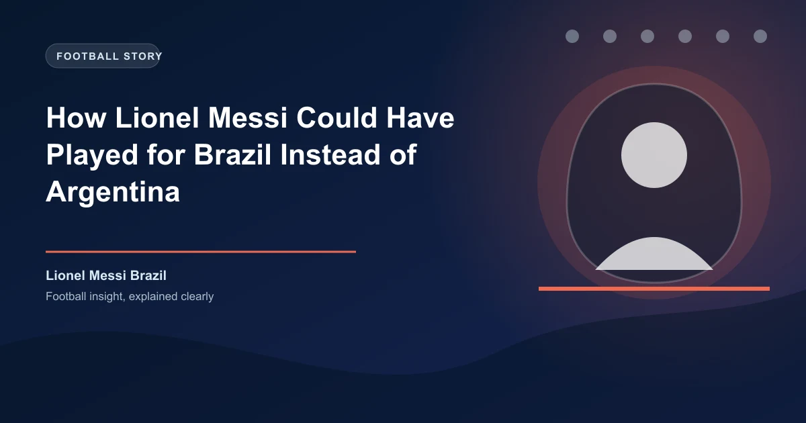

How Lionel Messi Could Have Played for Brazil Instead of Argentina

Lionel Messi is the most iconic Argentine footballer in history. He led La Albiceleste to the 2022 World Cup title, scored eight goals and four assists at the 2026 World Cup, and cemented his legacy as arguably the greatest player to ever live. But a three-year genealogical investigation has revealed something that would have changed football history forever: Messi's maternal great-grandfather was born in Brazil.
The discovery, published by Brazilian network Globo and first reported by Italian historian Fiorenzo Santini, traces one branch of Messi's family tree to Ribeirao Preto, a city in the interior of Sao Paulo state. But Brazil was not the only country that could have claimed him. Messi was also eligible to represent Spain and Italy during his career. This is the full story of how the world's greatest Argentine could have worn three different shirts.
The Brazilian Connection: A Great-Grandfather Born in Sao Paulo
The revelation comes from Santini, an Italian historian and amateur genealogist who spent over three years reconstructing Messi's family tree. His research, corroborated by immigration records, uncovered a previously unknown chapter in the Messi family history.
According to Santini's findings, one of Messi's maternal great-grandfathers, Arderigo Coccettini, was born in Ribeirao Preto, Sao Paulo, Brazil in 1904. The Coccettini family had emigrated from Italy to Brazil in 1899, arriving at the port of Santos. After Arderigo's birth in Brazil, the family made a pivotal decision: they would leave South America's largest country for neighboring Argentina.
The family arrived in Rosario, Santa Fe, Argentina on September 27, 1905. Upon settling in Rosario, the family's surname underwent a transformation. In Brazilian records, Arderigo became Federico, and the original Italian surname Coccettini was officially altered to Cuccittini — the spelling by which Lionel Messi's maternal lineage is known today.
Federico Cuccittini — the great-grandfather born in Brazil — went on to have children in Rosario. One of those children was Antonio Cuccittini, Messi's grandfather. Antonio's daughter, Celia Maria Cuccittini, became Lionel Messi's mother. This means Messi's connection to Brazil runs through his mother's direct bloodline: her grandfather was born on Brazilian soil.
Would FIFA Have Allowed Messi to Play for Brazil?
Here is where the story takes a critical turn. While the genealogical connection to Brazil is real and verified, FIFA eligibility rules would not have permitted Messi to represent Brazil based solely on a great-grandparent's birthplace.
FIFA's eligibility framework, outlined in Articles 5 through 9 of the Regulations Governing the Application of the Statutes, requires a player to hold the permanent nationality of the country they wish to represent. Nationality can be established through birth on the country's territory, or through a biological parent or grandparent born there — commonly known as the "grandfather rule."
The critical detail: FIFA's ancestry-based eligibility extends only to grandparents, not great-grandparents. A great-grandparent born in a country does not automatically confer eligibility under FIFA's standard regulations. For Messi to have been eligible for Brazil, he would have needed a parent or grandparent born there — not a great-grandparent.
Since Messi was born in Rosario, Argentina, and neither his parents nor his grandparents were born in Brazil, the Coccettini family's Brazilian chapter, while historically fascinating, would not have created a pathway to the Selecao under FIFA rules.
The Spain Pursuit: How La Roja Tried to Recruit Messi
While the Brazilian connection remains a historical footnote, the Spanish pursuit of Messi was very real, very serious, and came remarkably close to succeeding.
When 13-year-old Messi arrived in Barcelona in 2000 to join La Masia, the club's famed youth academy, he entered a legal framework that would change everything. Under Spanish law, immigrants from former Spanish or Portuguese colonies can apply for citizenship after just two years of continuous legal residency, rather than the standard ten years. As an Argentine — Argentina being a former Spanish colony — Messi was on a path to Spanish citizenship.
As Messi developed through Barcelona's youth ranks alongside teammates like Cesc Fabregas and Gerard Pique, who were representing Spain at youth level, the Royal Spanish Football Federation (RFEF) took notice. Former Barcelona youth coach Alex Garcia personally alerted Spain's youth coaches about Messi's availability.
"There's a kid here, an Argentine, but they don't call him up," Garcia told ESPN in a recent interview. "Maybe there's a possibility he might want to play for Spain."
Spain's youth team coach Gines Melendez made aggressive attempts to recruit Messi. When asked by ESPN what he was thinking when he learned a prospect of Messi's caliber could be available, a chuckling Melendez responded: "I don't know, kidnap him."
Former Spain manager Vicente del Bosque — the man who led Spain to their 2010 World Cup triumph — confirmed the extent of the federation's efforts. "The Federation made every effort to get Messi to play for Spain," del Bosque told Sky Sports. "Lionel refused because he loves his country. His arrival would have been for the best. Messi is Messi — there is only one. It would have been a dream to coach him."
Del Bosque later told Radio Marca: "I tried everything to get Messi to play for Spain. However, Lionel refused because of the love he has for his country."
The Emergency Plan: How Argentina Fought Back
Spain's pursuit of Messi triggered an emergency response from the Argentine Football Association (AFA). Former Argentina coach Jose Pekerman revealed during a 2025 appearance at the Ole Sports Summit in Buenos Aires that Spain had all the necessary paperwork prepared to call up a teenage Messi for their U-20 team — a move that would have permanently tied him to Spain under FIFA's eligibility regulations at the time.
Recognizing the threat of losing a generational talent, Pekerman orchestrated what has been described as an "emergency plan." Upon returning from Europe, he immediately contacted his assistant, Hugo Tocalli. Argentina hastily arranged a June 2004 U-20 international friendly match against Paraguay specifically to call up Messi and trigger FIFA eligibility rules that would permanently bind him to Argentina.
The plan worked. The 17-year-old Messi came off the bench and scored in Argentina's 8-0 victory over Paraguay, effectively ending Spain's hopes. Messi went on to score 11 goals in his first 16 appearances for Argentina's U-20 team, cementing his international future with the country of his birth.
As Pekerman recounted, after Argentina beat Spain in the semifinals of the 2003 U-17 World Cup (with Fabregas scoring for Spain), the Spanish players told the Argentine staff during the handshake: "If you had this kid, you would have been the champions."
The VHS Tape That Changed History
Before Argentina's emergency call-up, Messi's father Jorge arranged a brief meeting with Argentine assistant coach Claudio Vivas during a trip to Barcelona. Jorge showed Vivas a 12-minute VHS highlight tape of his son outclassing players two years older. Vivas was so impressed that he called Hugo Tocalli from his Barcelona hotel room and delivered the videotape in person upon returning to Argentina. That tape sparked the chain of events that led to Messi's first Argentina call-up.
The Italy Option: An Unused Path
Messi's connection to Italy runs deep on both sides of his family. His paternal great-great-grandfather, Angelo Messi, emigrated from Recanati in Italy's Marche region to Rosario in 1893. His mother's side also carried Italian heritage, reflecting the massive wave of Italian immigration to Argentina in the late 19th and early 20th centuries.
Under FIFA's eligibility rules, Messi would have qualified for an Italian passport through his great-grandparents. Both of his parents had Italian ancestry, giving him a legitimate claim to Italian citizenship and, by extension, eligibility to represent the Italian national team.
However, unlike Spain, there is nothing on record suggesting the Italian Football Federation (FIGC) ever attempted to recruit Messi. With both Argentina and Spain actively pursuing his commitment, Italy was never a realistic option. The Italian pathway remained theoretical rather than practical.
Historical Context: The Italian-Argentine Pipeline
Messi's situation is not unique. Argentina has produced numerous players who chose Italy over their birth country, including Mauro Camoranesi (55 caps for Italy), Dani Osvaldo, and Paulo Dybala (who is eligible for Italy, Argentina, and Poland). The Italian-Argentine football connection runs deep, and Messi's Italian heritage would have made him a natural candidate for the Azzurri. For more on how international allegiances shape football, see our analysis of how transfer windows affect football predictions.
What If Messi Had Chosen Spain?
The most compelling alternate history is not the Brazilian or Italian path — it is the Spanish one. Had Messi accepted Spain's offer, he would have joined what is widely regarded as one of the greatest international teams ever assembled.
Spain's golden generation included Xavi, Iniesta, Casillas, David Villa, and Xabi Alonso. This team won Euro 2008, the 2010 World Cup, and Euro 2012. Adding Messi to that roster — at the peak of his powers alongside his Barcelona teammates — would have been devastating.
As Fabregas told Goal.com: "It would have been phenomenal if Leo had played for Spain. We would have won more titles, but he always felt very Argentine and I think it was the perfect decision to play for his country."
Del Bosque went further, telling youth coach Melendez: "If I could have gotten him to play with us, we would have won one or two or three more World Cup titles."
| Scenario | Eligibility Path | What Happened | What Could Have Been |
|---|---|---|---|
| Brazil | Maternal great-grandfather born in Ribeirao Preto (1904) | Not eligible under FIFA rules (great-grandparent does not qualify) | Would have joined the Selecao during their rebuilding years |
| Spain | Residency + citizenship after 2 years in Spain | RFEF actively recruited him; Messi refused out of love for Argentina | Could have been part of 2010 World Cup and Euro 2012 winning squads |
| Italy | Great-grandparents from Recanati, Marche region | FIGC never made an approach; Messi always wanted Argentina | Theoretical option that was never pursued by either side |
| Argentina | Born in Rosario, Santa Fe | AFA arranged emergency 2004 U-20 call-up to secure his allegiance | Won 2022 World Cup, 2021 Copa America, 8 goals at 2026 World Cup |
The 2026 World Cup: Why This Story Resurfaced
Messi's Brazilian roots surfaced in the public consciousness at a remarkable moment: just days after he led Argentina to the 2026 World Cup final at MetLife Stadium in East Rutherford, New Jersey. Despite a extraordinary tournament in which the 39-year-old scored eight goals and provided four assists, Argentina fell 1-0 to Spain after extra time, with Ferran Torres scoring the winner in the 106th minute.
The defeat denied Messi a second consecutive World Cup title, which would have made Argentina the first back-to-back champions since Brazil in 1962. It was widely expected to be Messi's final World Cup match, though he has not formally announced his international retirement.
Santini's research also noted that his maternal family's original surname, Coccettini, was officially altered to Cuccittini after they settled in Rosario — a small detail that had been buried for over a century until the Italian historian's investigation brought it to light.
What This Means for Football Heritage
The discovery of Messi's Brazilian roots is more than a curiosity — it highlights the complex web of immigration, identity, and national allegiance that shapes international football. Argentina and Brazil, South America's two great footballing rivals, share deep historical connections through Italian immigration in the late 19th and early 20th centuries. The Coccettini family's journey from Italy to Brazil to Argentina is a microcosm of that broader story.
For football fans and historians, the revelation adds another layer to the "what if" narrative that has always surrounded Messi's international career. While he will forever be remembered as Argentina's greatest player, the knowledge that he could have been eligible for three other nations — and was actively courted by one of them — makes his choice to represent La Albiceleste all the more meaningful.
As Messi himself said in his book, Messi, The Patriot: "I was asked informally if I wanted to play for Spain, but I always said that I wanted to play for my national team because I love Argentina and these are the only colours I want to wear."
Frequently Asked Questions
Could Lionel Messi have played for Brazil?
According to a three-year genealogical investigation by Italian historian Fiorenzo Santini, Messi's maternal great-grandfather Federico Cuccittini (born Arderigo Coccettini) was born in Ribeirao Preto, Sao Paulo, Brazil in 1904. The family emigrated to Rosario, Argentina in 1905. However, under FIFA eligibility rules, great-grandparents do not qualify a player for national team representation. Only parents and grandparents qualify under the "grandfather rule." So while Messi has Brazilian ancestry, he would not have been eligible to play for Brazil under FIFA regulations.
Why did Spain try to recruit Lionel Messi?
After Messi moved to Spain at age 13 to join Barcelona's La Masia academy in 2000, he was eligible for Spanish citizenship under the country's naturalization laws for citizens of former Spanish colonies. The Royal Spanish Football Federation (RFEF) made concerted efforts to convince him to represent Spain. Former Spain manager Vicente del Bosque confirmed the federation "made every effort" to get Messi to play for Spain, but Messi refused out of love for Argentina.
Could Messi have played for Italy?
Yes, Messi was eligible for Italian citizenship through his great-grandfather, who emigrated from Recanati in Italy's Marche region to Rosario, Argentina in 1883. Both his parents had Italian ancestry. However, there is nothing on record suggesting the Italian Football Federation (FIGC) ever attempted to recruit him, and Messi always expressed his desire to play for Argentina.
How did Argentina prevent Messi from playing for Spain?
Former Argentina coach Jose Pekerman orchestrated an "emergency plan" after learning Spain was pursuing Messi. Argentina hastily arranged a June 2004 U-20 friendly match against Paraguay to call up Messi and trigger FIFA eligibility rules, permanently tying him to Argentina. Messi scored in that match and went on to score 11 goals in his first 16 appearances for Argentina's U-20 team.
What is FIFA's "grandfather rule"?
FIFA's eligibility rules allow a player to represent a national team if they hold that country's permanent nationality. Nationality can be established through birth on the territory, or through a biological parent or grandparent born there. The "grandfather rule" specifically enables eligibility when at least one biological grandparent was born in the country. However, great-grandparents do not qualify under standard FIFA regulations.
Turn Football Knowledge Into Winning Bets
WinFulltime delivers data-driven predictions grounded in deep football analysis. Stay ahead of the market with data-driven insights.
Get Today's Predictions →